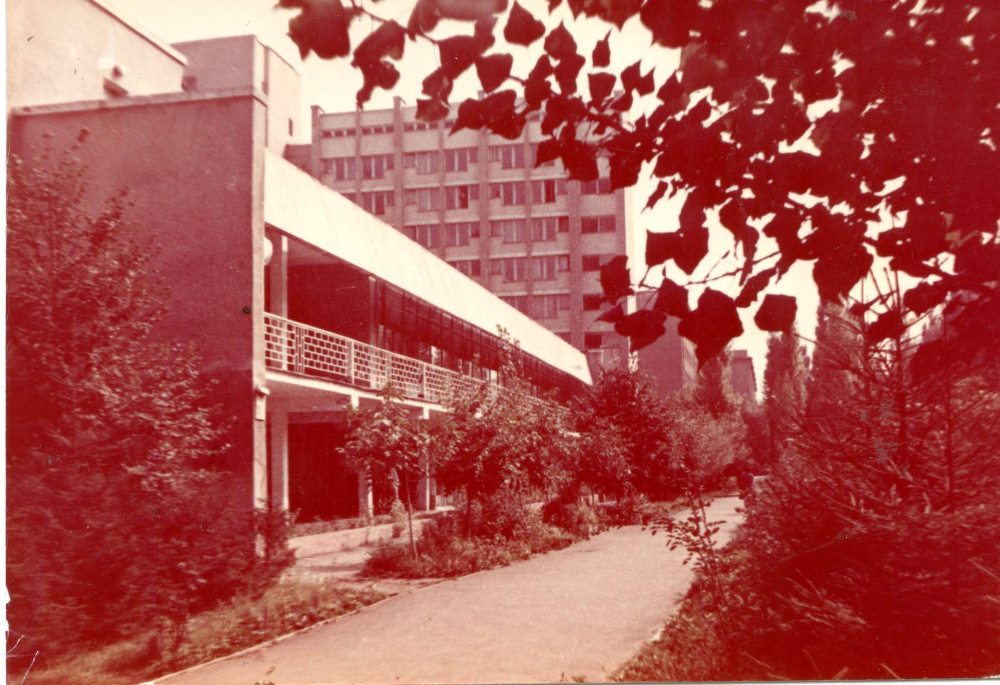
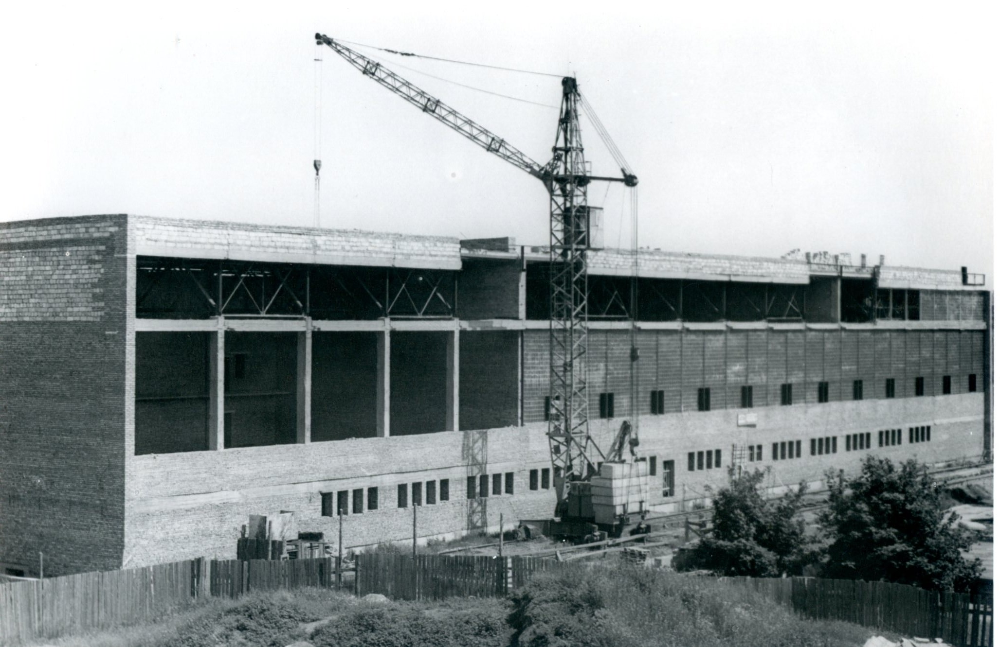

ЗДАНИЯ
Новые корпуса и лаборатории ОНПУАдминистративный корпус
Учебно-производственные лаборатории ОПИ, 1970-е годы
Комбинат быта и отдыха студентов, октябрь 1978 г. В эксплуатации с декабря 1977 года.
Строительство спортивного комплекса, 15 мая 1972.
Спортивный комплекс, 1975г. Общая площадь 7035 кв. метров.
Строительство первого высотного общежития №5 в ОПИ. Фото 1972 г. В эксплуатации с декабря 1973 года. Общая площадь 6900 кв. метров.
Строительство общежития №6, 1975 г.
Общежитие №8, 1985 г.
Общежитие №9, 1987 г.
Вид студенческого городка со стадиона ОПИ, 1980-е годы
Корпус Р, в котором начал свою работу факультет подготовки для иностранных граждан
Энергетическая лаборатория ОПИ